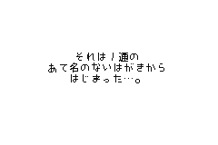

Mail de Cute (Japan)
Flash 512K
Cartridge Identity
- Game Code
AMCJ(FamilyAMC)- Header Title
Mail de Cute- Maker / Revision
A4/ rev0- ROM Size
- 8.0 MiB (8,388,608 B)
- Save Media
Flash 512K- SHA-256
4e7ff8c32e0da82ccf9ca1c1b936cae9d2835c2e9cfcc1e23c515ba0180e3182
Screenshots


Hardware MMIO Subsystems
save_bus_sram_flash0x8031f44,0x8032424